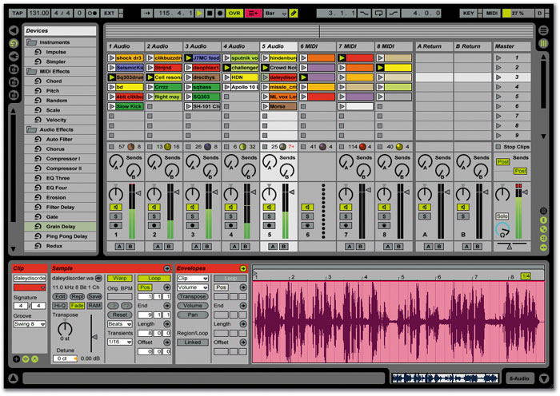
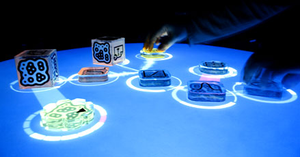
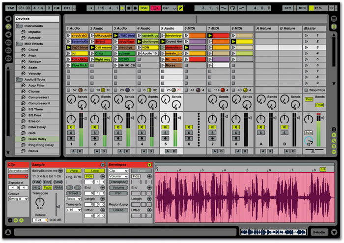
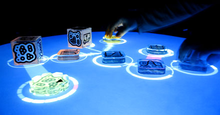
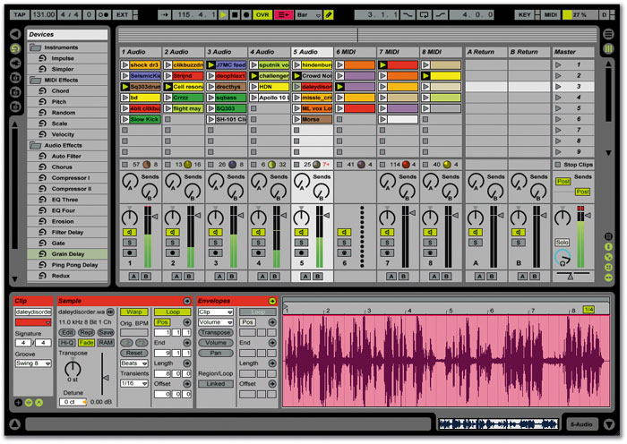
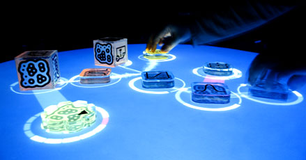

Why do we code?
 



add Crossfit, Lose It, Pole dancing classes
dgmds15@gmail.com


/people card. (Don't let your skill with HTML/CSS/JS influence your design too much!)dgmd.github.io/peopleTo get our feet wet, let's take a stab at using HTML, CSS, and Javascript by populating the people page of the course site with our own information…
dgmde15@gmail.com. If you'd like, you can take a look at Shaunalynn and Alec's journals to see how they're set up, too.